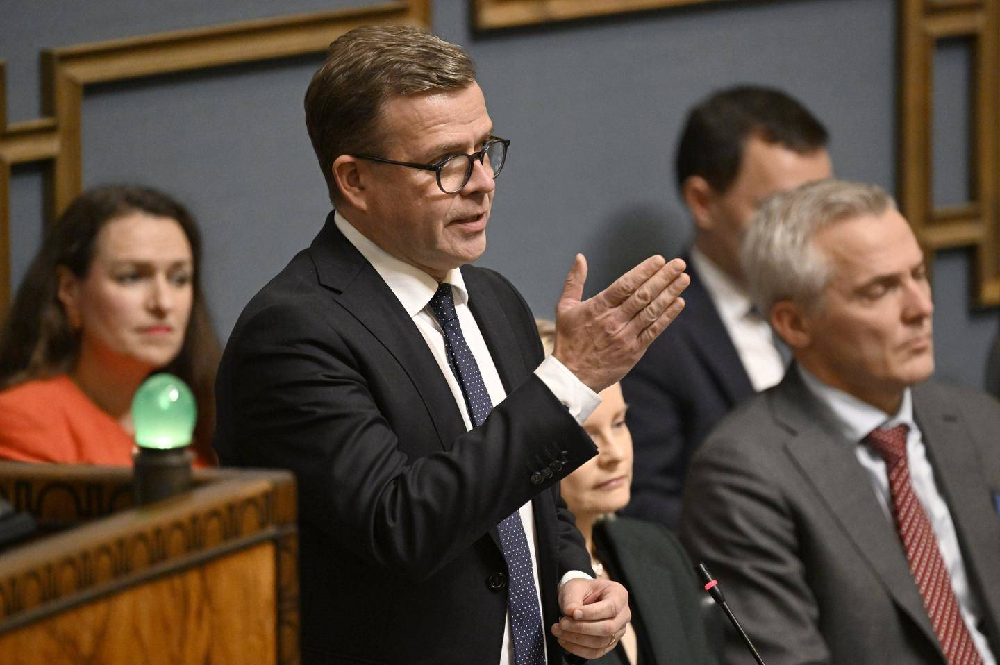
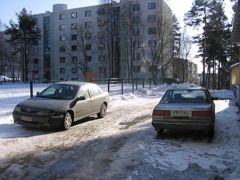
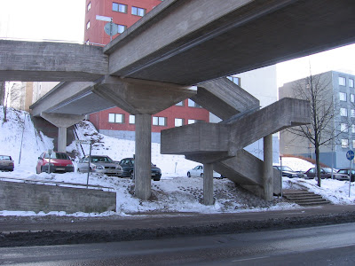
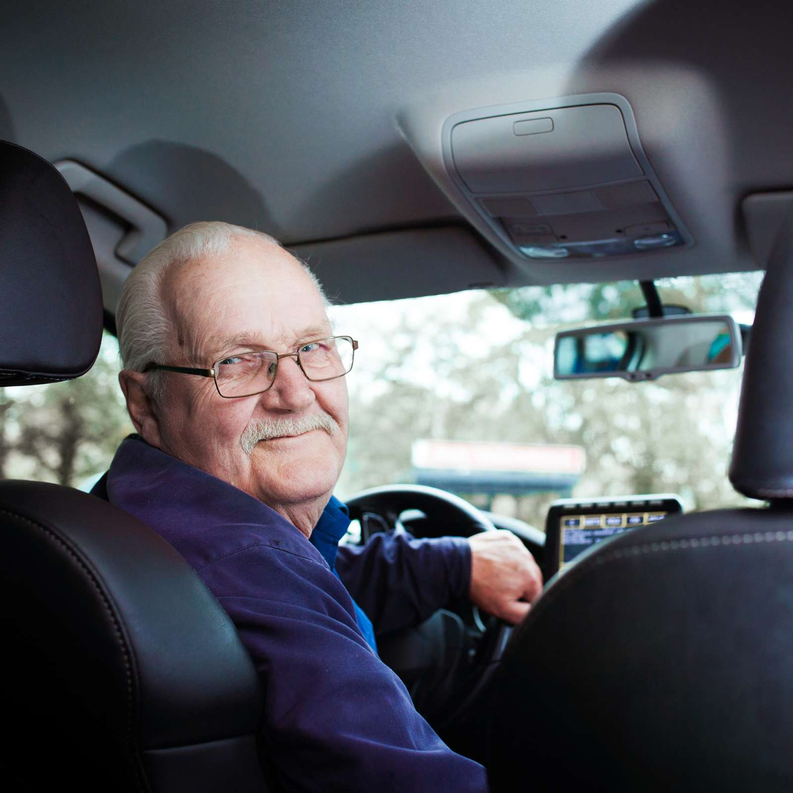

Artikkelit

Hallitus uhkaa Valtion median budjetin tarkastamista.
Asiantuntija varoittaa Horjuuttaa vakavasti luottamusta lehdistöön ja demokratiaan
.

Ihan kuin kotona!
- Venäjän delegaatio
ihaili valtiovierailullaan suomalaista arkkitehtuuria Vantaan Koivukylässä

Valtion uutiset omaksuu brutalistisen verkkosivusuunnittelufilosofian.

Taksikuskien kouluttaja on huolissaan kuskien kyvykkyydestä. Kannustaa kuskeja kouluttautumaan.
- Ehdottomasti tarvitaan lisää toimia valtion tasolta
.